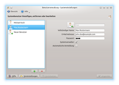
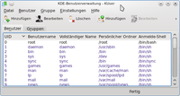
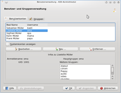
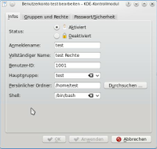
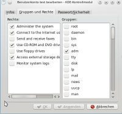

Benutzer und Gruppen Kubuntu
Dieser Artikel wurde für die folgenden Ubuntu-Versionen getestet:
Ubuntu 14.04 Trusty Tahr
Zum Verständnis dieses Artikels sind folgende Seiten hilfreich:
 Es stehen zwei grafische Werkzeuge zur Benutzerverwaltung bereit. Neben der KDE-Benutzerverwaltung, die in der Standardinstallation enthalten ist, gibt es noch das Programm KUser, welches zuerst nachinstalliert muss.
Es stehen zwei grafische Werkzeuge zur Benutzerverwaltung bereit. Neben der KDE-Benutzerverwaltung, die in der Standardinstallation enthalten ist, gibt es noch das Programm KUser, welches zuerst nachinstalliert muss.
Die KDE-Benutzerverwaltung findet man in den Systemeinstellungen im Abschnitt "Systemverwaltung" unter "User Management".
KDE-Benutzerverwaltung (seit 13.10)¶
|  |
| Neue KDE-Benutzerverwaltung |
Mit Kubuntu 13.10 wurde mit dem Paket user-manager die alte Benutzerverwaltung durch ein übersichtlicheres Programm ersetzt. Dieses ist in der Standard-Installation enthalten und findet sich in den Systemeinstellungen im Bereich Systemverwaltung.
Auf der linken Seite wird eine Liste der Benutzer im System angezeigt, auf der rechten Seite die Informationen zum in dieser Liste ausgewählten Benutzer.
Über den Eintrag "Neuer Benutzer" kann ein neuer Benutzer hinzugefügt werden, ebenso über den grünen Plus-Button unter der Benutzerliste. Mit dem roten Minus-Button daneben kann der ausgewählte Benutzer gelöscht werden.
Mit den Feldern "Systemverwalter" und "Automatische Anmeldung" auf der rechten Fensterhälfte kann festgelegt werden, ob es sich bei dem ausgewählten Benutzer um einen Nutzer mit Administrator-Rechten handelt und ob dieser Benutzer beim Starten des Rechners automatisch angemeldet werden soll.
KUser¶
|  |
| KUser |
Alternativ kann man weiterhin das Programm
kuser (ab Ubuntu 13.04 in universe)
 mit apturl
mit apturl
Paketliste zum Kopieren:
sudo apt-get install kuser
sudo aptitude install kuser
verwenden. Dieses muss allerdings erst installiert werden, da es sich nicht mehr in der Standardinstallation befindet. Das Programm ist Teil des KDE Metapakets kdeadmin. Man findet es unter "K-Menü -> System -> Benutzerverwaltung (KUser)". Anschließend kann man die Benutzer und Gruppen über eine sehr übersichtliche, grafische Benutzeroberfläche verwalten. Die Menüs und Menüpunkte sind alle selbsterklärend.
KDE-Benutzerverwaltung (bis 13.04)¶
|  |
| Alte KDE-Benutzerverwaltung |
Auf der Registerkarte "Benutzerkonten" findet man alle auf dem System angelegten Benutzer. Wird ein Benutzerkonto per  markiert, erscheinen neben dem Loginnamen und der UserID (UID) alle zugehörigen Untergruppen. Hier lässt sich zum Beispiel überprüfen, ob ein bestimmter Benutzer zusätzlich in der Gruppe
markiert, erscheinen neben dem Loginnamen und der UserID (UID) alle zugehörigen Untergruppen. Hier lässt sich zum Beispiel überprüfen, ob ein bestimmter Benutzer zusätzlich in der Gruppe sudo ist und damit Root-Rechte [2] besitzt.
Achtung!
In der Regel erscheinen lediglich normale Benutzer und Gruppen. Systemkonten oder -gruppen können jedoch durch Markieren der entsprechenden Option ebenfalls angezeigt und bearbeitet werden. Systemkonten oder Gruppen sollten nur von versierten Benutzern bearbeitet werden, da man durch unsachgemäße Änderungen unter Umständen das ganze System unbrauchbar machen kann!
Die Registerkarte "Gruppen" enthält alle auf dem System angelegten Gruppen und ihre Mitglieder. Wie zuvor beschrieben, kann man auch hier sehen, welche Benutzer zum Beispiel der Gruppe admin angehören.
|  |
| Allgemeine Informationen |
Unter dem Hauptfenster sind die drei Schaltflächen "Bearbeiten ...", "Neu ..." und "Entfernen ..." angeordnet, welche die Bedienung ermöglichen. Die folgende Punkte bezieht sich ausschließlich auf die Verwaltung von Benutzern.
PPA¶
Eine aktualisierte Version der KDE-Benutzerverwaltung von Kubuntu 12.04 mit einigen sicherheitskritischen Bugfixes ist in folgendem PPA zu finden:
Adresszeile zum Hinzufügen des PPAs:
ppa:mik32120/userconfig-fixed
Hinweis!
Zusätzliche Fremdquellen können das System gefährden.
Ein PPA unterstützt nicht zwangsläufig alle Ubuntu-Versionen. Weitere Informationen sind der  PPA-Beschreibung des Eigentümers/Teams mik32120 zu entnehmen.
PPA-Beschreibung des Eigentümers/Teams mik32120 zu entnehmen.
Damit Pakete aus dem PPA genutzt werden können, müssen die Paketquellen neu eingelesen werden.
Damit kann die "alte" KDE-Benutzerverwaltung auch in Kubuntu 14.04 installiert werden.
Benutzer hinzufügen¶
Hinweis:
Manche Einstellungen werden vom Programm vorgegeben und sollten nur geändert werden, wenn man sich über die Auswirkungen im Klaren ist!
Über die Schaltfläche "Neu ..." lässt sich ein neuer Benutzer einrichten. Das nun erscheinende Fenster enthält drei Reiter, wobei der erste Reiter "Infos" grundlegende Einstellungen bietet:
Reiter Infos¶
| Reiter "Infos" | |
| Einstellung | Anmerkung |
| "Status:" | Deaktiviert: Der Benutzer kann sich nicht anmelden |
| "Anmeldename:" | Pflichtfeld |
| "Vollständiger Name:" | Optional |
| "Benutzer-ID:": | Diese Zahl wird intern vom System verwendet, beispielsweise um den Eigentümer einer Datei zu identifizieren. |
Die letztgenannte sowie die restlichen Einstellungen können bedenkenlos übernommen werden.
Reiter Gruppen und Rechte¶
|  |
| Rechtevergabe |
Der Reiter "Gruppen und Rechte" enthält Einstellungen, die die Rechte des Benutzers und seiner Gruppe definieren. Auf der linken Seite sind bestimmte "Rechtegruppen" eingetragen. Eine Aktivierung dieser Rechte bewirkt im Prinzip ein Zuordnung zu einer oder mehrerer Gruppen. Auf der rechten Seite können dem Benutzer weitere Gruppen zugewiesen werden.
Reiter Passwort/Sicherheit¶
Hier lässt sich das Passwort sowie weitere Einstellungen vornehmen. Die Optionen sind selbsterklärend.
Die erste Anmeldung¶
Ein neuer Benutzer muss bei der ersten Anmeldung am System ein neues Passwort vergeben. Der erste Start wird etwas Zeit in Anspruch nehmen, da nun das Homeverzeichnis eingerichtet wird.
Benutzer löschen¶
Möchte man einen Benutzer löschen, so wählt man im Reiter "Benutzerkonten" den Benutzer an und klickt auf "Entfernen". Nun hat man die Möglichkeit sowohl die Hauptgruppe als auch das Homeverzeichnis des Benutzer löschen zu lassen.
 Grundlagenartikel
Grundlagenartikel- Erstellt mit Inyoka
-
 2004 – 2017 ubuntuusers.de • Einige Rechte vorbehalten
2004 – 2017 ubuntuusers.de • Einige Rechte vorbehalten
Lizenz • Kontakt • Datenschutz • Impressum • Serverstatus -
Serverhousing gespendet von